ラピタ本店のカツサンドはボリュームがありました。
2022/02/17
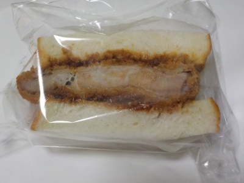
税込み200円のカツサンドですが、カツが厚いです。
コスパいいですね。いつもこの値段で販売しているのかな？
お肉が沢山食べれて幸せな気分になれました。
島根県出雲市今市町87
2022/02/17

税込み200円のカツサンドですが、カツが厚いです。
コスパいいですね。いつもこの値段で販売しているのかな？
お肉が沢山食べれて幸せな気分になれました。
2020/11/16
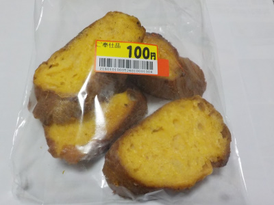
フランスパンのフレンチトーストです。
玉子が染みてて、いい焼き色です。でも全部が染みていないので、程良い固さがありました。
パンの味もちゃんとあるし、パンの耳の香ばしさも味わえました。
シュガーやマーガリンが多目のフレンチトーストも満足感があっていいですが、こっちの方が美味しいかな。
2019/11/02
前回カルボナーラを食べたら美味しかったので、今回は味を変えてマルゲリータにしました。
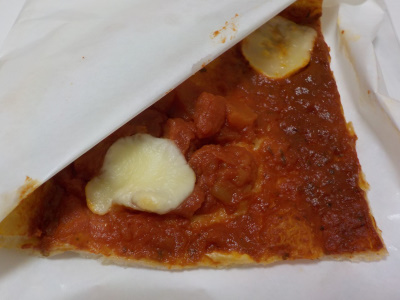
ピザソースがトマトよりでした。塩分少な目で味も軽いので、チーズやバジルの味が楽しめました。
なんかピザ屋さんのピザみたいで美味しかったです。
ソースが多くある分ピザがしっとりしてました。それでもピザの外側は記事が固めでいい食感でした。
2019/10/23
ちょっと薄い生地のピザですね。
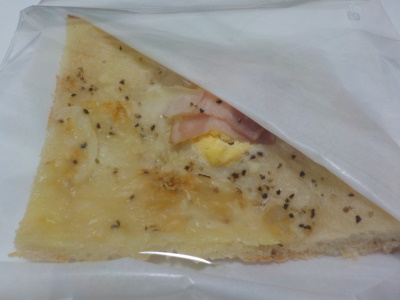
スナックぽっくてボリュームが少なそうに見えるんですが、固めで歯ごたえがありました。
変なたとえですが、パンの耳みたい。
噛み応えがあって味わいがありました。
こうゆうピザもいいですね。
個人的にはふわふわのピザパンより、この固めのピザの方が好きだなと思いました。
これはまた買って食べるな。
2019/09/16
リニューアルといっても同じ場所で同じような配置で販売してます。
販売しているパンの種類が変わりました。大人の事情かな？
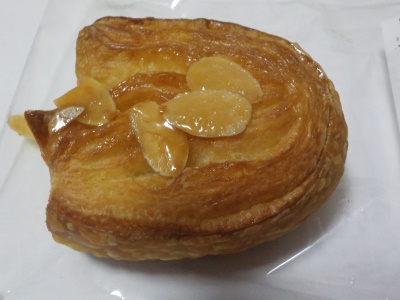
試に小さなパンを買いました。キャラメルデニッシュです。
中には具が入っていなくて、普通のパン寄りなデニッシュパンでした。
パンの味を楽しむみたいな、ちょっと上品な感じがしました。
2019/05/16
テリーヌって名前に惹かれて買いました。テリーヌって料理っぽい感じがしてたんですが、パンでもいいんですね。
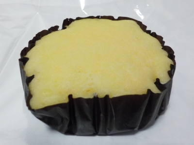
しっとり感があり、甘いミルク味が強かったです。練乳よりは軽いです。
蒸しパンを半生タイプにして、濃い味にした感じかな。
2018/08/30
ちょっと小さ目のパウンドケーキです。
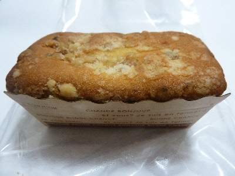
レーズンもクルミもサイズの小さいものが入っていました。
歯ごたえが弱いのでちょっと物足りないかな。
でも値段が150円くらいなので、十分な品質だと思います。
パウンドケーキは他にも数種類あったので、違う味も食べてみたいと思いました。
2018/06/18
通常高いんですが、ご奉仕品で150円になっていました。
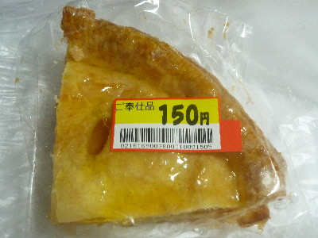
リンゴ多めで美味しかったです。
サクサクパイってよりは、ケーキ寄りな感じでした。
美味しいスイーツでした。
2018/02/14
ラピタ本店で肉まんを買いました。以前に買ったあんまんが美味しかったので期待しながら食べました。
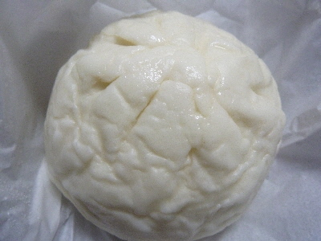
1個200円の肉まんは違いますね。
普段食べてる3個200円とか4個200円の肉まんとは味が全然違う。
値段が違うので味が違ってあたりまえなんですけど、普段いいもの食べていないのでちょっと感動しました。
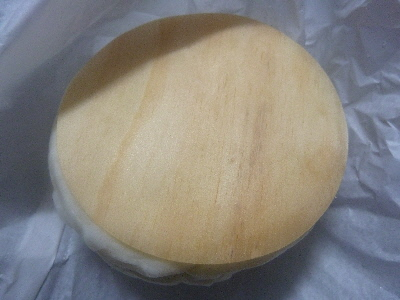
高級なせいか、肉まんの下は紙じゃなくて木でした。剥がしやすかったです。
まんじゅうもお肉も美味しかったです。
2018/01/16
ラピタ本店のパンコーナーであんまんが販売していました。
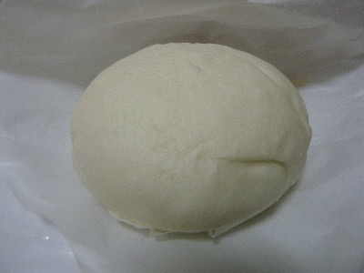
パン屋で「あんまん」ってあるんですね。
まんじゅう（？）のキメが細かくて、パンっぽくて美味しかったです。
2017/10/07
パイの中には栗がまるごと１個と栗のクリームが入っていました。
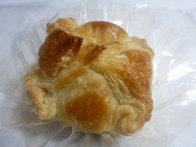
モンブランがパイに包まれた感じです。
美味しい洋菓子ですね。また買いたいな。
2017/07/23
真ん中にある黄色いのがマンゴージャムです。
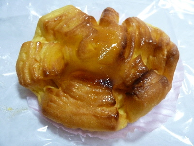
マンゴージャムが甘くて美味しかったです。
マンゴーのないところは甘くないんですが、普通に美味しいパンでした。
2017/06/07
伊勢茶って有名なんですね。全国第3位らしいです。
そんな伊勢茶を使ったクロワッサンです。
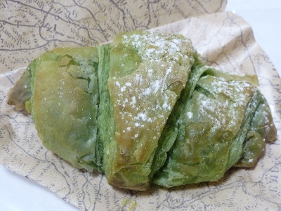
見た目はお茶感が強いですね。
でも味はチーズクリームが強かったです。甘いチーズクリームが美味しい菓子パンでした。
2017/04/24
ベーコンとチーズにピザソースが入っているので、ほぼピザですね。
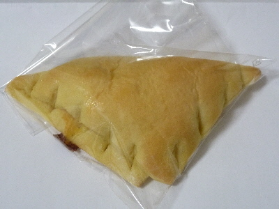
食べやすくて、お洒落なピザです。
私はピザパンよりもこっちのほうが好きだな。
具違いの商品が色々販売されるといいな。
2015/12/31
ラピタ本店のシュガーバターロール
2015/12/01
ラピタ本店のどっこい薩摩
2014/08/10
ラピタ本店の食パンあんパン
2014/05/04
ホットケーキスタイルってお洒落なパンがありました。
2013/10/06
ラピタ本店（出雲市今市町）のたっぷりクリームパン。
2013/06/03
ラピタ本店の小さな焼きドーナッツ
2012/12/21
かわいいパンダパン見つけました。
2012/09/29
ラピタ本店のクリームチーズデニッシュ
2011/12/06
ラピタ本店の「もち食感パン」（チーズ）
2011/12/06
ラピタ本店のプチメルヘン
ラピタ本店のクリームパン
ラピタ本店のレーズンパン
ラピタ本店のチーズラスク
ラピタ本店のチョコメロンパン
ラピタ本店のシュークリーム
ラピタ本店の餃子パン
ラピタ本店の黒糖ベーグル
ラピタ本店のいちじくの姿煮パン
ラピタ本店のコーンパン
ラピタ本店でパン屋さんオープン
JAしまねが運営するスーパー「ラピタ」内のパンコーナーです。